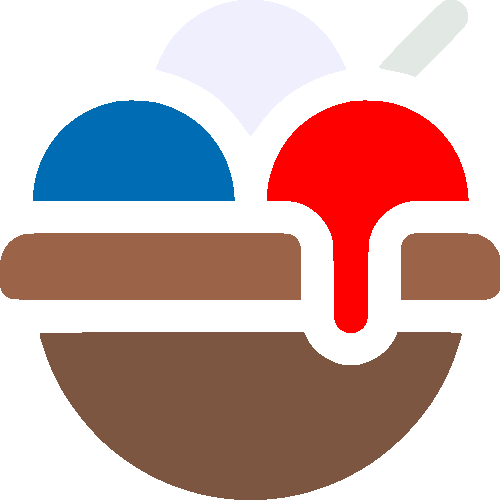
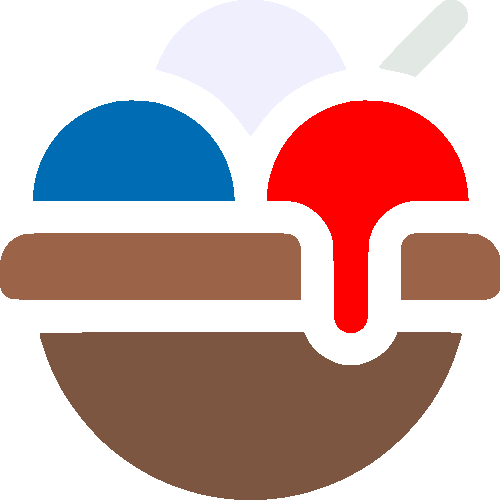

A Propos de Nous
Koh Frais est une entreprise créer par M.Koh. Nous proposons des produits glacés bio fabriqué entièrement en France depuis 20ans à Lannion et à depuis 3ans aussi à Pontivy, pour les professionnels ainsi que pour les particuliers.
L'Origine de Nos Produits
Nos produits sont fabriqués avec des sélectionner rigouresement et provenant des producteurs locaux Bretons. Ainsi avec une exigence de goût et de parfum, vous allez fondre en dégustant nos produits.
La Fabrication
Fabriqué sur deux lieux différents, un à Lannion et un second à Pontivy. Nous transformons les matières premières pour obtenir nos somptueux produits.
Notre Qualité
Nos matières premières sélectionner avec passions du goût et valider par les Professionnels et des particuliers nous vous offrons des produits de qalitées
Notre Label
Fonctionnant avec les producteurs Bretons, nous avons rejoind le réseau "Produits en Bretagne" qui soutient le développement responsable, l'activté économiqie et la culture !